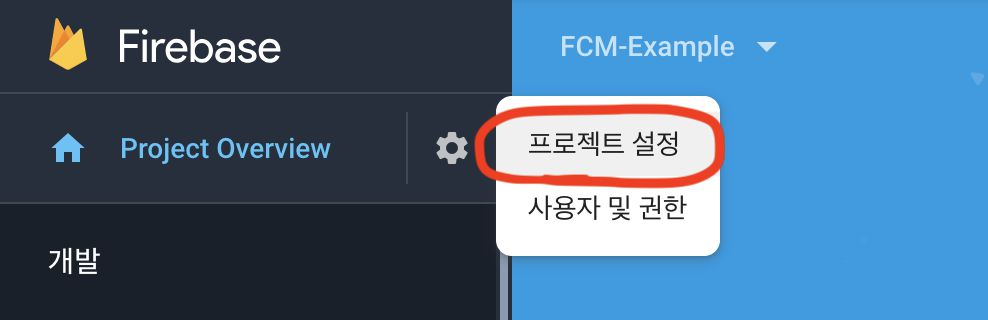

Android에 푸쉬 알림 보내기 - 서버편
Node.js와 Google Firebase를 사용하여 Android에 푸쉬 알림 보내는 방법을 알아보겠습니다 (서버 편)
1. Firebase 콘솔에서 비공개 키 받기

프로젝트 콘솔페이지에서 설정 - 프로젝트 설정으로 들어갑니다.

서비스 계정 탭으로 이동합니다.

새 비공개 키 생성을 클릭하여 json 파일을 다운로드 받습니다.
2. Node.js 프로젝트에 Firebase 추가
1 | npm install firebase-admin --save |
위의 명령어를 통해 npm 프로젝트에 firebase 패키지를 설치 합니다.
1 | var admin = require('firebase-admin'); |
위의 코드를 통해 admin을 초기화 합니다.
3. 개별 기기로 메시지 전송
1 | // Registration Token 은 안드로이드 앱에서 나온 Token 입니다. |
성공적으로 완료되면 send() 메소드는 메시지 ID 문자열을 projects/{project_id}/messages/{message_id} 형식으로 반환합니다.
그렇지 않은 경우 오류가 표시됩니다. 설명 및 해결 단계가 포함된 전체 오류 코드 목록은 Admin FCM API 오류를 참조하세요.
Android에 푸쉬 알림 보내기 - 서버편
https://blog.hyunsub.kim/Android/Firebase-Push-Notification-2/